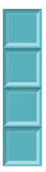
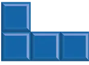
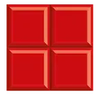
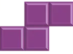
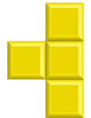
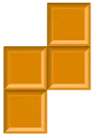

TetriSTEM es un juego rompecabezas basado en el juego Tetris. TetriSTEM amplia la mecánica normal de un juego de Tetris con diferentes variantes de bloques y mecánicas a las que el jugador tendrá que saber adaptarse. Existen 3 niveles de velocidad: Prinicipiante, Intermedio y Experto. En TetriSTEM nos encontraremos con los conocidos TetriBlocks originales y nuevas variantes que serán uno de los nuevos cuatro tipos de bloques: energía, código, moléculas y ecuaciones. Estas variantes requieren una gran destreza mental para resolver ecuaciones, no crear un bucle infinito... ¡o no hacer explotar la cuadrícula de juego!
Piezas del TetriSTEM
-
Pieza I
 -
Pieza J

-
Pieza L
 -
Pieza O
 -
Pieza S
 -
Pieza T
 -
Pieza Z

Como dicho antes, los bloques pueden ser de cinco variantes: Normal, Energía, Código, Moléculas y Matemáticas.
¡No te agobies!: Jugando al tutorial aprenderas todas las diferencias y mecánicas rápidamente.
Además, es muy probable que sepas diferenciar unos bloques de otros sin mucha dificultad.
Puedes aprender más sobre las cinco variantes en la galería.